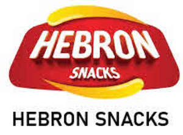

Trade Mark Journal No.2025/044 31 October 2025
UK00004279769 17 October 2025 (1,29,30)

- Class 1
- Protein prepared from soya beans for use in the manufacture of foodstuffs.
- Class 29
- Crisps; Potato snacks; Potato crisps in the form of snack foods; Fruit snacks; Tofu-based snacks; Potato crisps; Crisps (Potato -); Vegetable crisps; Low-fat potato crisps; Legume-based snacks; Candied fruit snacks; Dried fruit-based snacks; Potato snack foods; Milk-based snacks; Coconut-based snacks; Potato-based snack foods; Cheese-based snack foods; Fruit-based snack food; Snack food (Fruit-based -); Snacks of edible seaweed; Nut-based snack foods; Tofu-based snack food; Vegetable-based snack food; Vegetable-based snack foods; Fruit- and nut-based snack bars; Sweet corn-based snack foods; Meat-based snack foods; Fruit based snack foods; Meat-based snack food; Yoghurt drinks; Yoghurt beverages; Soy-based snack foods; Fish-based snack food; Fruit chips; Chips (Fruit -); Snack mixes consisting of dehydrated fruit and processed nuts; Flavoured milk drinks; Flavoured milk beverages; Low-fat potato chips; Yogurt drinks; Potato chips; Chips (Potato -); Fish with chips; Kale chips; Apple chips; Banana chips; Coconut chips; Cassava chips; Vegetable chips; Vegetable-based chips; Soya chips; Frozen chips; Soy chips; Yuca chips; Chips [french fries]; Yucca chips; Purple sweet potato chips; Fish crackers; Nut-based food bars; Jellies for food, other than confectionery; Milk-based beverages flavored with chocolate; Cocoa butter for food; Potato cakes; Fruit-based fillings for cakes and pies; Dried milk for food; Food pastes made from meat; Tajine [prepared meat, fish or vegetable dish]; Prepared dishes consisting primarily of fishcakes, vegetables, boiled eggs, and broth (oden); Tagine [prepared meat, fish or vegetable dish]; Prepared meals made from meat [meat predominating]; Dried fish meat; Food products made from fish; Fish (Food products made from -); Soya beans, preserved, for food; Preserved soya beans for food; Cooked meat dishes; Meat jellies; Bottled cooked meat; Foods prepared from fish; Extracts of vegetables [juices] for cooking; Desserts made from milk products; Milk beverages containing fruits; Frozen meat products; Meat boiled down in soy sauce (tsukudani meat); Soups and stocks, meat extracts; Milk drinks containing fruits; Preserved soy beans for food; Edible fat-based spreads for bread; Prepared meat dishes; Cooked fruits; Prepared dried fruit mixes; Edible oils for use in cooking foodstuffs; Dried fruit products; Canned cooked meat; Foods made from fish; Cooked sesame seeds, not being seasonings or flavorings; Fruit jellies [not being confectionery]; Vegetable extracts for food; Quick-frozen vegetable dishes; Meat and meat products; Jellies for food; Vegetable juice concentrates for food; Milk-based beverages containing fruit juice; Vegetable oils for food; Vegetables, cooked; Cooked vegetables; Dried meat; Cooked meat; Cooked meats; Vegetable fats for food; Fish cakes; Tea flavored eggs; Vegetables, dried; Dried vegetables; Flakes of dried fish meat (kezuri-bushi); Cacao butter for food; Fermented baked milk; Processed fruits, fungi, vegetables, nuts and pulses; Frozen cooked fish; Fruit juices for cooking; Jellies, jams, compotes, fruit and vegetable spreads; Vegetables pickled in soy sauce; Freeze-dried vegetables; Chilled meals made from fish; Freeze-dried meat; Fermented vegetable foods [kimchi]; Snack mixes consisting of processed fruits and processed nuts; Prepared vegetable dishes; Soy-based food bars; Cocoa flavored milk beverages.
- Class 30
- Crispbread snacks; Cereal snacks; Tortilla snacks; Cereal-based savoury snacks; Rice snacks; Rice crisps; Cereal snack foods flavoured with cheese; Corn-based savoury snacks; Wholewheat crisps; Snacks manufactured from muesli; Crisps made of cereals; Cheese curls [snacks]; Cheese balls [snacks]; Snacks made from muesli; Fruit cake snacks; Snacks manufactured from cereals; Rice cake snacks; Cereal based snacks; Cheese flavored puffed corn snacks; Snack foods made from cereals; Cereal-based snack food; Snack food (Cereal-based -); Cheese-flavored biscuits; Crackers flavoured with vegetables; Snack food products made from cereals; Cereal-based snack bars; Puffed corn snacks; Biscuits flavoured with fruit; Wheat-based snack foods; Puffed cheese balls [corn snacks]; Crackers flavoured with fruit; Cereal based snack foods; Extruded corn snacks; Snack food products made from cereal starch; Corn-based snack foods; Extruded wheat snacks; Snack food products made from rusk flour; Rice-based snack foods; Snack foods prepared from potato flour; Drinks flavoured with chocolate; Salty biscuits; Snack food products made from cereal flour; Chocolate flavoured beverages; Flavourings of tea for food or beverages; Rice-based snack food; Snack food (Rice-based -); Snack food products made from potato flour; Grain-based snack foods; Savoury biscuits; Flour based savory snacks; Snack products made of cereals; Cereal based prepared snack foods; Crackers flavoured with cheese; Snack food products made from rice; Salted biscuits; Snack foods made from corn; Snack foods prepared from maize; Muesli desserts; Chocolate beverages; Flavourings of almond for food or beverages; Chocolate biscuits; Snack bars containing a mixture of grains, nuts and dried fruit [confectionery]; Snack foods made from wheat; Snack foods made of wheat; Biscuits for cheese; Multigrain-based snack foods; Chips [cereal products]; Flavoured popcorn; Crackers flavoured with meat; Snack food products made from soya flour; Snack foods made from corn and in the form of puffs; Sweetmeats [candy] being flavoured with fruit; Sweets; Savory biscuits; Crackers flavoured with spices; Snack food products made from rice flour; Drinks containing chocolate; Snack food products consisting of cereal products; Biscuits containing fruit; Flavourings of lemons for food or beverages; Chocolate sweets; Drinks prepared from chocolate; Biscuits containing chocolate flavoured ingredients; Sugar-free sweets; Cereal breakfast foods; Bread biscuits; Sugarfree sweets; Snack food products made from maize flour; Confectionery chips for baking; Pastries, cakes, tarts and biscuits (cookies); Gum sweets; Chocolate-covered potato chips; Beverages containing chocolate; Biscuits having a chocolate flavoured coating; Chocolate chips; Salted wafer biscuits; Pita chips; Tortilla chips; Rice chips; Butterscotch chips; Grain-based chips; Seaweed flavoured corn chips; Taco chips; Corn chips; Wonton chips; Vegetable flavoured corn chips; Peanut butter confectionery chips; Shrimp chips; Wafers [biscuits]; Pretzels; Chocolate coated biscuits; Wafers [food]; Chocolate-based ready-to-eat food bars; Chocolate food beverages not being dairy-based or vegetable based; Food flavourings; Vanilla flavourings for food or beverages; Potato flour for food; Potato flour [for food]; Fruit flavourings for food or beverages, except essences; Potato starch for food; Sugar candy [for food]; Cereal based food bars; Ready to eat savory snack foods made from maize meal formed by extrusion; Chocolate beverages with milk; Chocolate for confectionery and bread; Chocolate desserts; Chocolate drink preparations flavoured with toffee; Chocolate drink preparations flavoured with nuts; Chocolate drink preparations flavoured with banana; Chocolate pastries; Chocolate beverages containing milk; Chocolate sauces; Chocolate syrups for the preparation of chocolate based beverages; Chocolate candies; Beverages made with chocolate; Beverages made from chocolate; Chocolate based drinks; Chocolate flavourings; Chocolate brownies; Chocolate covered biscuits; Chocolate cakes; Chocolate covered wafer biscuits; Chocolate drink preparations flavoured with mint; Biscuits having a chocolate coating; Milk chocolate teacakes; Chocolate caramel wafers; Chocolate flavoured confectionery; Confectionery items coated with chocolate; Chocolate coated marshmallow biscuits containing toffee; Chocolate confectionery; Chocolate wafers; Chocolate; Milk chocolate bars; Chocolate-based beverages with milk; Sweets (Non-medicated -) in the nature of chocolate eclairs; Chocolate coffee; Chocolate waffles; Chocolate fillings for bakery products; Chocolate confectionery products; Confectionery chocolate products; Pastries with fruit; Fruit pastries; Chocolate confections; Biscuits; Chocolate cake; Chocolate-coated rice cakes; Chocolate decorations for cakes; Ice-cream cakes; Shortbread biscuits; Butter biscuits; Rice biscuits; Iced fruit cakes; Chocolate covered cakes; Fruit cakes; Chocolate-based fillings for cakes and pies; Onion or cheese biscuits; Shortbread with a chocolate flavoured coating; Wafer biscuits; Tea cakes; Half covered chocolate biscuits; Chocolate confectionery having a praline flavour; Chocolate confectionary; Biscuits [sweet or savoury]; Shortbread with a chocolate coating; Breakfast cake; Chocolate topped pretzels; Almond pastries; Chocolate candy with fillings; Chocolate marzipan; Boxed lunches consisting of rice, with added meat, fish or vegetables; Pastries consisting of vegetables and meat; Frozen pastry stuffed with meat and vegetables; Frozen prepared rice with seasonings and vegetables; Dried pasta foods; Food mixtures consisting of cereal flakes and dried fruits; Pastries consisting of vegetables and fish; Pre-packaged lunches consisting primarily of rice, and also including meat, fish or vegetables; Meat pies [prepared]; Prepared savory foodstuffs made from potato flour; Foods produced from baked cereals; Pastries consisting of vegetables and poultry; Sauces for barbecued meat; Flavourings of almond, other than essential oils, for food or beverages; Processed seeds used as a flavoring for foods and beverages; Pastries containing creams and fruit; Pies containing meat; Pies containing vegetables; Seafood flavoured condiments; Sandwiches containing meat; Vegetable pulps [sauces - food]; Flavourings of lemons, other than essential oils, for food or beverages; Bread flavoured with spices; Extruded food products made of rice; Frozen pastry stuffed with vegetables; Flavourings made from meat; Fruit sauces; Sauces for frozen fish; Fruit filled pastry products; Foodstuffs made of sugar for sweetening desserts; Meat pies; Pies (Meat -); Chewing sweets (Non-medicated -) having liquid fruit fillings; Frozen prepared rice with seasonings; Canned pasta foods; Bread flavored with spices; Cooked rice mixed with vegetables and beef (bibimbap); Frozen pastry stuffed with meat; Extracts of coffee for use as flavours in foodstuffs; Hamburgers being cooked and contained in a bread roll; Dried sugared cakes of rice flour (rakugan); Soya flour for food; Edible fruit ices; Edible gold for decorating food and beverages; Chocolate coated fruits; Fruit bread; Bread casings filled with fruit; Fruit breads; Dried and fresh pastas, noodles and dumplings; Vegetable pies; Frozen yogurt cakes; Breakfast cereals flavoured with honey; Prepared foodstuffs in the form of sauces; Beverages with a chocolate base; Ice beverages with a chocolate base; Chocolate drink preparations; Aerated drinks [with coffee, cocoa or chocolate base]; Aerated beverages [with coffee, cocoa or chocolate base]; Cocoa drinks.
MR MOHAMMED MILHIM